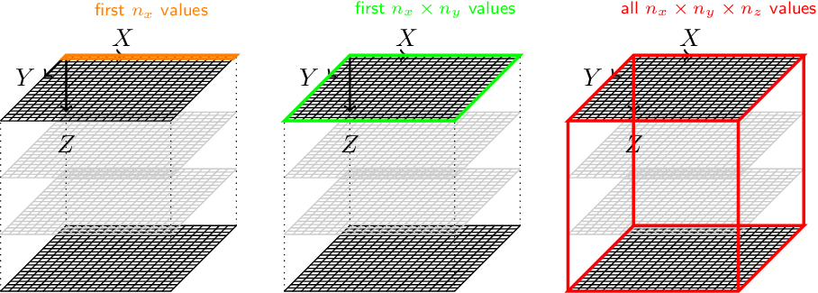

How to read 3d files properly and ensure consistency of the coordinate system?¶
3d images may be stored in various binary formats. Here we assume a raw binary format possibly with a header (like .edf images). It is important to recognize that you must know how the file is stored since this information is usually not available from the file metadata (except for tiff files).
In pymicro we assume that the data is written to the disk as a succession of (x,y) slices, x being the fastest moving index.
Let (nx, ny, nz) be the volume dimensions in each direction. Assuming the first slice of (nx x ny) pixels is the bottom slice: x is the fastest varying index, y is the second fastest and z is the slowest. The file must thus be read with the convention (+x, +y, +z) and displayed in a right handed coordinate system. This means if you plot the first slice with x horizontal towards the right and y vertical towards the bottom (such as in ImageJ or with pyplot with the option origin=’upper’), tehn the second slice is below to ensure a right handed coordinate system.
In this recipe we will work with the polycristalline pure titanium sample, load it into memory, print some of the grain values and display it in 2d and 3d to chack the consistency.
